การแตกหัก (Fracture) • มี 2ชนิด (แบ่งตามความสามารถในการเสียรูปแบบถาวรของวัสดุ) 1. การแตกหักแบบเหนียว(ductile fracture) - มีการดูดซับพลังงานได้สูงก่อนแตกหัก - รอยแตกเกิดขึนอย่างช้าๆ มีระยะเวลาและสัญญาณเตือนก่อนแตกหัก เรียกว่า stable crack - เกิดการเสียรูปแบบถาวรในปริมาณมาก 2. การแตกหักแบบเปราะ(brittle fracture) - มีการดูดซับพลังงานได้ตํ่าก่อนแตกหัก - รอยแตกเกิดการขยายตัวรวดเร็วและต่อเนื่ อง เรียกว่า unstable crack - เกิดการเสียรูปแบบถาวรน้อยมากหรือไม่เกิดขึ้นเลย **หากมีการแตกหักมักต้องการให้เกิดการแตกหักแบบเหนียวมากกว่า
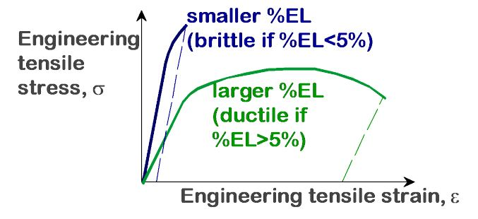ความเหนียววัดในรูปของ
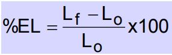 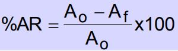การแตกหักแบบเหนียว
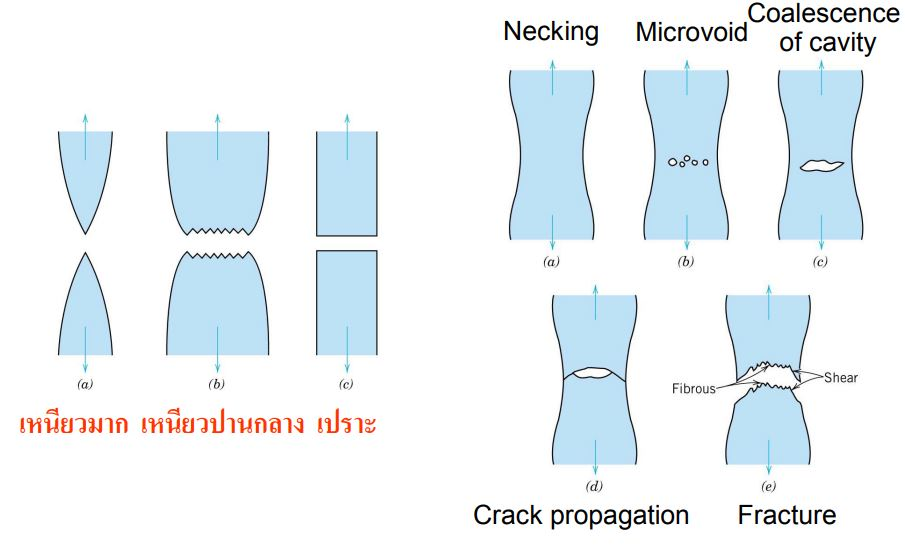 •ประกอบด้วยหลุม Dimples (ลักยิม) •หลุมแต่ละหลุมเป็นครึ่งของMicrovoid •หลุมบริเวณขอบชินงานทํามุม 45° 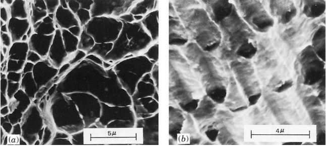การแตกหักแบบเปราะ
•รอยแตกขยายตัวอย่างรวดเร็ว •รอยแตกโตขึ้นทิศเกือบตั้งฉากกับทิศความเค้น •ไม่เกิดการเสียรูปแบบถาวร 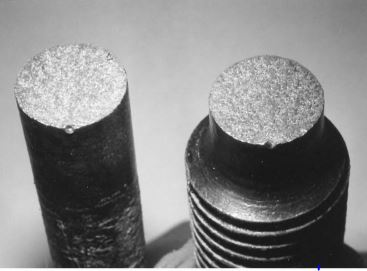 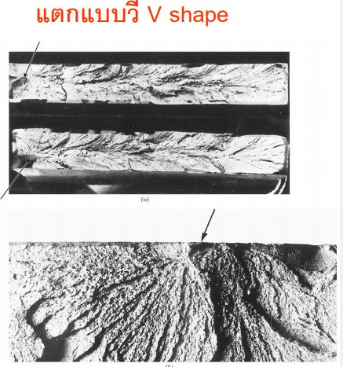หลักการกลศาสตร์การแตกหัก
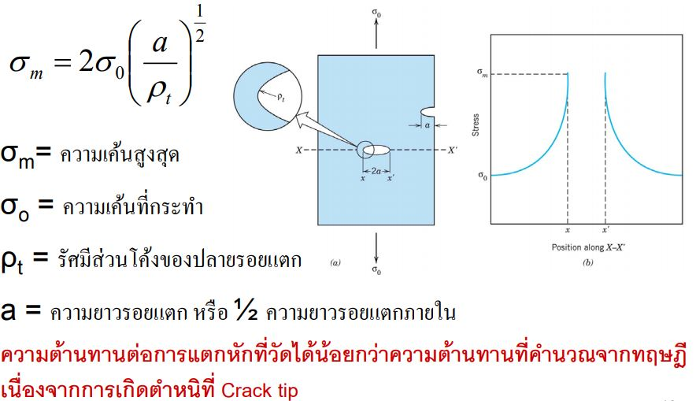 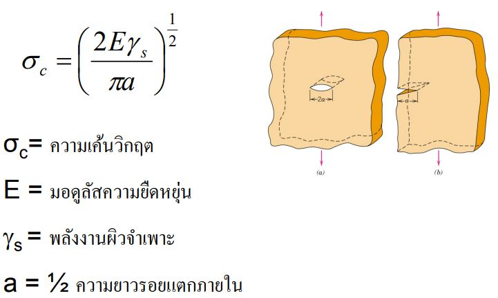การเพิ่มปริมาณคาร์บอนในเหล็กกล้าทําให้เพิ่มความแข็งแรง แต่เหล็กกล้านั้นจะเปราะมากขึ้น และพลังงานที่ดูดซับในการกระแทกระหวางการแตกจะลดลง
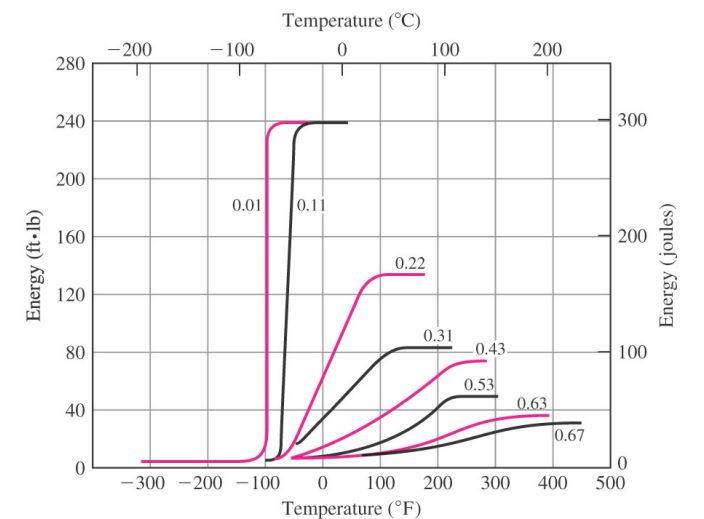• เกิดขึ้นในโครงสร้างที่ได้รับความเค้นสลับไปมาแบบวัฏจักรเป็น เวลานานแม้วาความเค้นที่ได้รับจะตํ่ากว่าความต้านทานแรงดึงสูงสุดหรือความแข็งแรงจุดคราก • โดยปกติจะเริ่มต้นเกิดที่จุดที่มีการรวมตัวของความเค้น เช่น ขอบมุมคม หรือรอยบาก เริ่มต้นจากรอยแตก และรอยแตกจะขยายตัวต่อไป • ความล้าเป็ นสาเหตุของการเสียหายในวัสดุโลหะมากถึงร้อยละ 90 • ความล้าก่อให้เกิดความหายนะอยางเงียบๆ เพราะเกิดขึ้นอย่าง ทันทีทันใด • ความเสียหายจากความล้ามีลักษณะคล้ายการแตกแบบเปราะไม่พบการเสียรูปแบบถาวร
ความเค้นแบบวัฏจักร (Cyclic stresses)
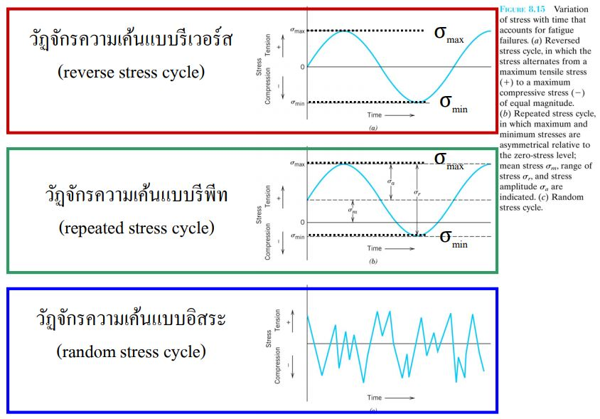 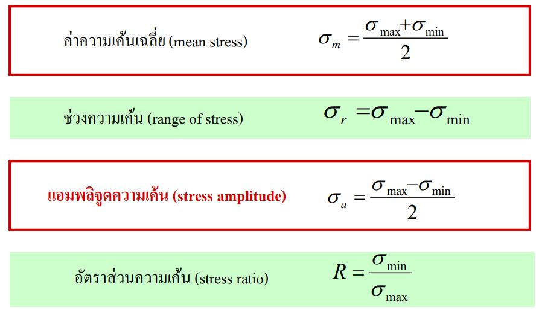จุดเริ่มต้นและการขยายตัวของรอยแตก
มีลักษณะการเกิด 3ขั้นตอน คือ – จุดเริ่มต้นรอยแตก(crack initiation) รอยแตกขนาดเล็กบริเวณศูนย์รวมความเค้น – รอยแตกขยายตัว (crack propagation) ในแต่ละรอบที่ใช้ความเค้นทําให้รอยแตกขยายตัว – เกิดการแตกหัก ซึ่งเกิดขึ้นอยา ่ รวดเร็วทันทีที่รอยแตกมีขนาดเท่ากับขนาดวิกฤตลักษณะของรอยแตก
• รอยแตกแบบ Beachmark หรือเรียกว่า รอยแตกแบบเปลือกหอยกาบ • เกิดกบวัสดุที่หยุดพักใช้งานเป็นช่วงๆ เช่น เครื่องจักรที่ทํางานเป็นกะ • แถบแต่ละเส้นแสดงถึงการขยายตัวของรอยแตก 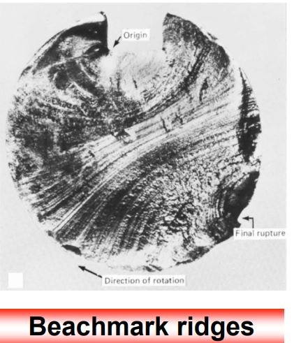 • ผิวรอยแตกแบบ Striation มีขนาดเล็กระดับจุลภาค • แต่ละแถบแทนระยะทางที่แถวหน้ารอยแตกเคลื่อนที่ไปในวัฏจักรหนึ่งรอบ • คล้ายคลึงกบ Beachmark แต่อาจจะพบรอยแตกแบบ Striationเป็นพันแถบในแนวของ Beachmark แนวเดียว 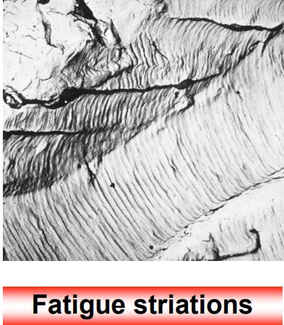